Factorization Techniques for Recommendation
Paul English
What is Recommendation?
Some Obvious Examples
- Netflix suggesting movies you might like after you've added some ratings
- Amazon offering "commonly sold together" discount packages
- Facebook showing "friends you might know"
We can think of recommendation problems as a graph or network
Multiple vertices with edges connecting them.
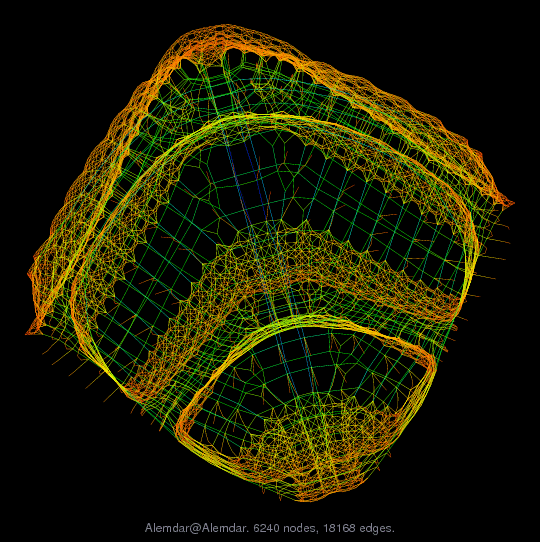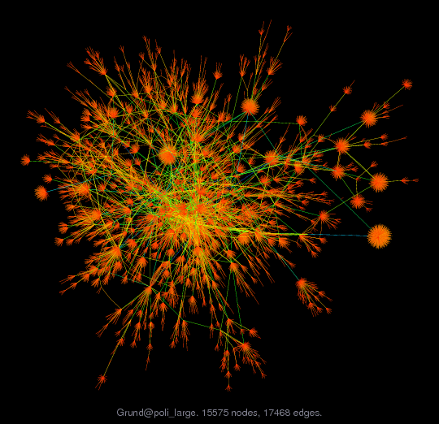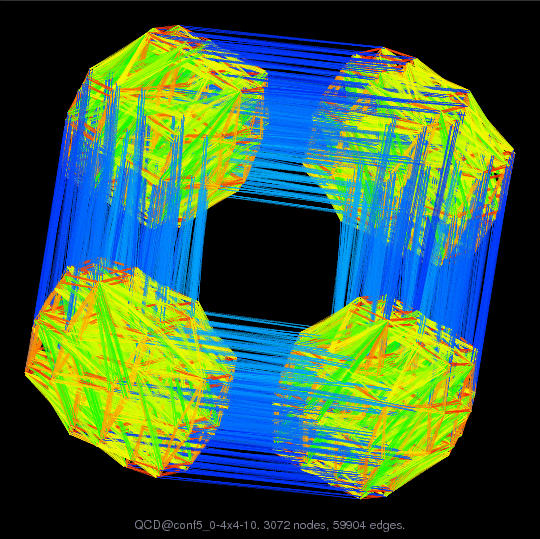They are seen in all kinds of industries
- Social Networks
- Communication Networks
- Road Networks
- Product Networks
- ...
We can look at different aspects of the data
- Content Based Filtering
- Collaborative Filtering
There are different ways to solve the collaborative problem
- Item Similarity / Nearest Neighbors
- Factorization and Latent Dimensions
Matrix Factorization
Matrix Factorization is the process of seperating one matrix into multiple factor matrices
$$R = [[5.000 3.000 0.000 1.000] [4.000 0.000 0.000 1.000] [1.000 1.000 0.000 5.000] [1.000 0.000 0.000 4.000] [0.000 1.000 5.000 4.000]] s.t. [[2.204 -0.017] [1.475 0.008] [0.799 1.414] [0.609 1.104] [0.006 2.150]] [[ 2.323 -0.215] [ 0.865 0.250] [-0.317 1.442] [ 0.727 2.391]] [[ 5.124 1.903 -0.724 1.563] [ 3.426 1.279 -0.457 1.091] [ 1.551 1.045 1.785 3.961] [ 1.178 0.804 1.399 3.083] [-0.449 0.543 3.100 5.146]]$$
You can think of it like pulling apart a matrix

This lets us capture the relationships between each item and user
 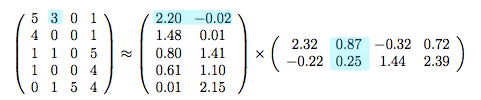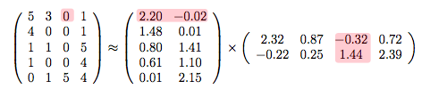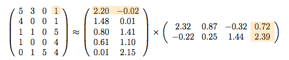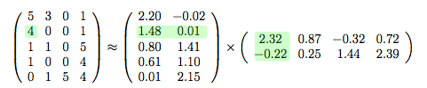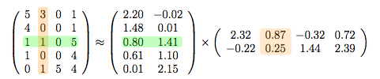
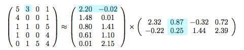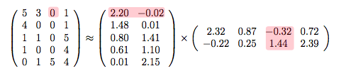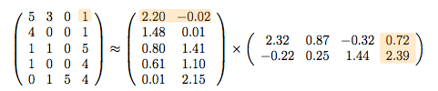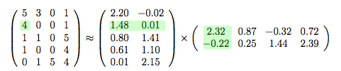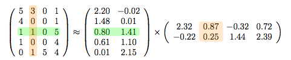We find our factor matrices using an optimization routine
e.g. gradient descent
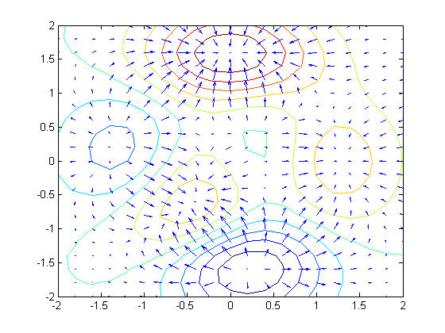Building on the Matrix Factorization Model
Including Additional Information
Making use of time
Confidence Intervals
The Factorization Machine
What is this?
car
legos!
The Factorization Machine is a generalization of traditional matrix factorization techniques
Matrix factorization is a specialized case of the factorization machine.
It earns it's name from the Support Vector Machine
But really it's not much like an SVM
It's a generalized learning technique
Questions?
Thanks!
Paul English